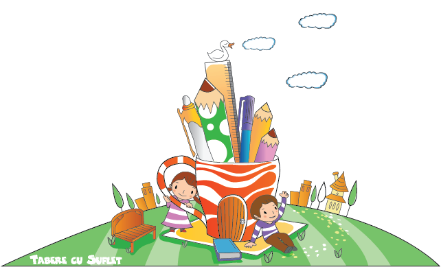
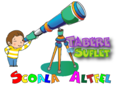
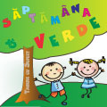
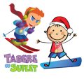

Invatam si ne Distram!
Invatam si ne distram este un proiect educational Edu WeCare. A fost creat in 2014, iar prin acest proiect copiii au acces on line si off line la diferite programe bazate pe mai multe domenii de cunoastere, aflate sau nu in materia scolara.
Accesul este gratuit si, cel mai important, interactiunea se face cu Zambetul pe buze! 😀

Scoala AltfelPentru a veni in intampinarea unitatilor de invatamant (scoli, gradinite, licee etc) si pentru a sprijini programul guvernamental Scoala Altfel, am creat o serie de activitati educative si sportive, in cadru urban sau in natura, de una sau mai multe zile! Si pentru ca totul sa fie si mai placut, multe dintre aceste activitati sunt ProBono, costurile fiind sustinute prin programele WeCare:)

Saptamana VerdePrin acest program se doreste ca, timp de o saptamana, elevii sa iasa din sala de clasa si sa învete despre natură și despre schimbările climatice. Cum toate activitatile Asociatiei Tabere cu Suflet se desfasoara in natura iar una dintre principalele Valori este grija pentru mediu, venim in sprijinul acestui program propunand o serie de activitati educative, in natura, de una sau mai multe zile!
Si pentru ca totul sa fie si mai placut, activitatile sunt ProBono, costurile fiind sustinute prin programul Edu WeCare:)

Scoala de Schi si SnowboardSportul este foarte important pentru noi, in Tabere cu Suflet. De aceea am creat mai multe programe prin care incurajam copiii sa faca miscare in natura, sa practice diferite sporturi si sa participe la Competitii. Unul dintre aceste este Scoala de Schi si Snowboard Tabere cu Suflet, prin care oferim, contra cost, cursuri de initiere, freeride, indoor sau de performanta, pentru copii si adulti.
Academia Joyful Teaching
Joyful Teaching este un programul educational creat pentru a ajuta copiii sa invete si sa mearga cu placere la scoala.
Programul a fost lansat de o mamica aflata in situatia de a vedea cum tristetea cu care copiii ei porneau spre scoala se accentua pe zi ce trece:(
A observat cu surprindere lacunele din sistemul educational romanesc si, dorind sa lase ceva in urma, a chemat in ajutor profesorii de la Academia Educationala din Antwerp.
Acestia au dezvoltat de-a lungul timpului diferite tehnici utile pentru imbunatatirea procesului Educational, cum ar fi Cadranul Calitatilor, Inner Child sau Self Care, care astazi fac parte din Academia Joyful Teaching.
"Mens sana in corpore sano!" - Decimus Iunius Iuvenalis Mai multe citate